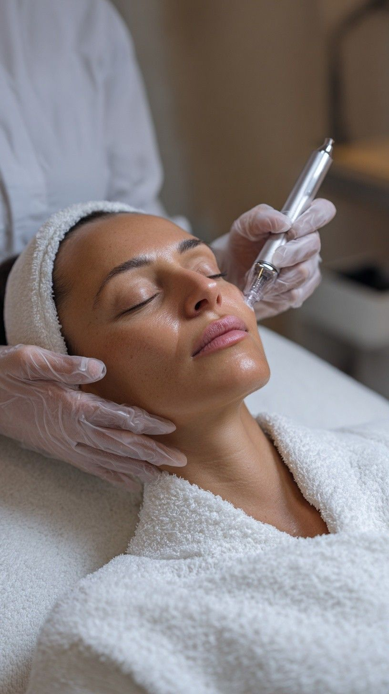
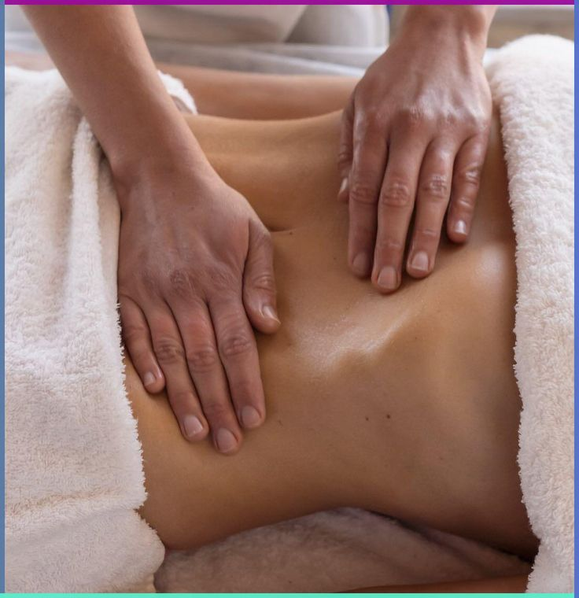
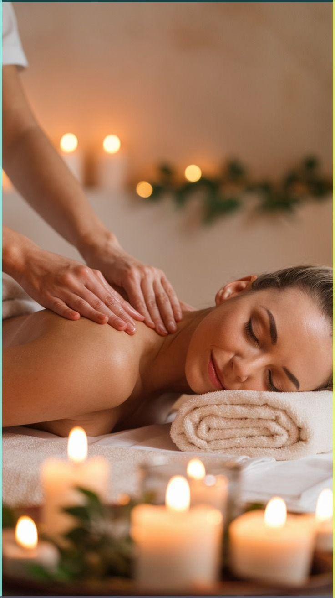
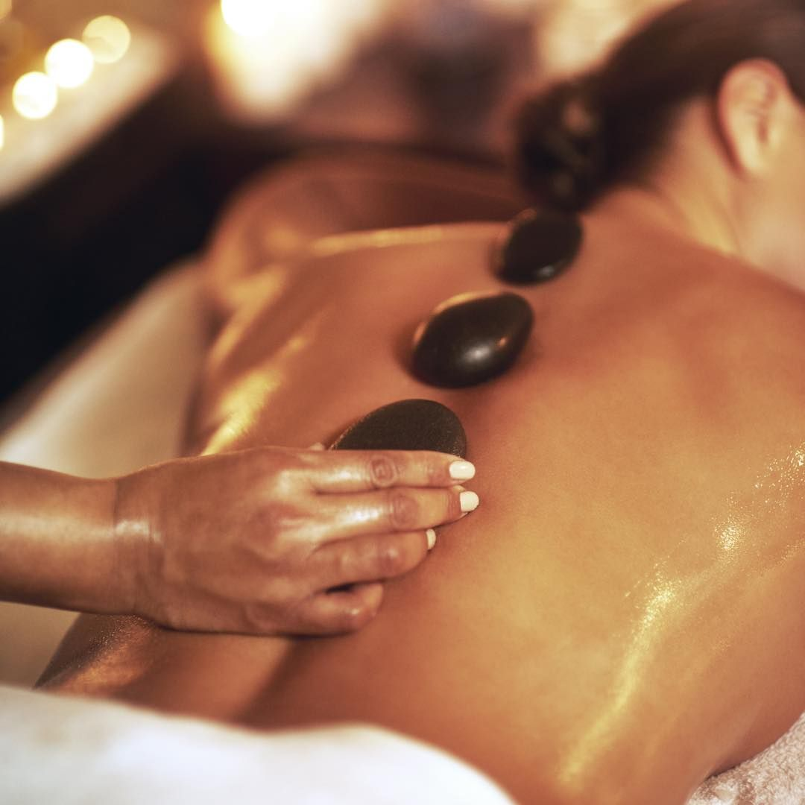
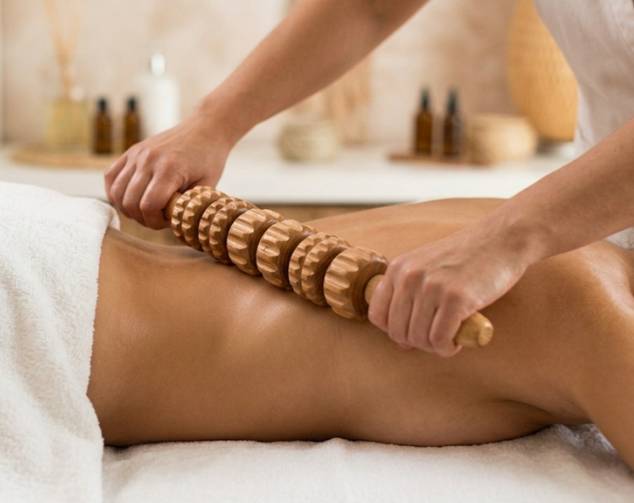
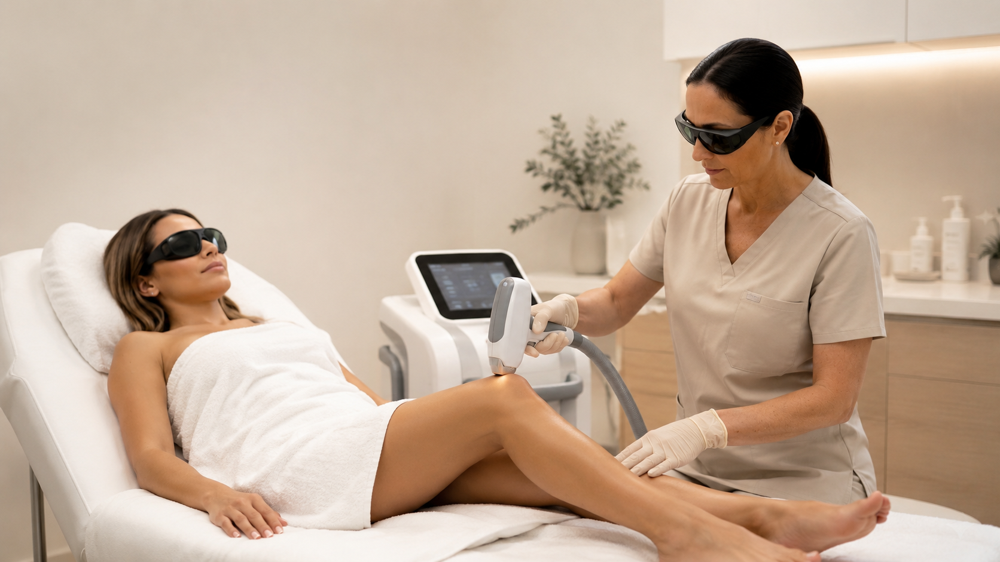

Tratamientos Profesionales
Tratamientos faciales, corporales y de bienestar adaptados a lo que necesitás.

Dermapen + Rutina Glow
Microagujas que estimulan colágeno, atenuando líneas, manchas y cicatrices. Con Vitamina C, ácido hialurónico y sérum. (1 vez/mes).
Ver tratamiento →
Drenaje Linfático Manual
Masaje rítmico suave para eliminar toxinas, desinflamar y reducir retención de líquidos. Ideal para edemas, celulitis y post-op.
Ver tratamiento →Drenaje Linfático (Embarazo)
Protocolo seguro y suave para etapas pre y post embarazo. Alivia la pesadez en piernas, deshincha tobillos y mejora el retorno venoso.
Ver tratamiento →
Masaje Descontracturante
Terapia profunda focalizada en desarticular contracturas, aliviar tensiones en espalda, cuello y fatiga muscular diaria.
Ver tratamiento →
Masaje con Piedras Calientes
Termoterapia volcánica combinada con maniobras relajantes para aliviar dolores profundos, estrés y restablecer el balance bioenergético.
Ver tratamiento →
Limpieza Facial Profunda
Higienización completa, extracción de impurezas, exfoliación y máscaras descongestivas nutritivas según tu biotipo. (1 vez/mes).
Ver tratamiento →
Maderoterapia Corporal
Técnica holística de modelado con utensilios de madera. *Sin sesión individual: se realiza en combo con Drenaje x10 (2 veces/sem).*
Ver tratamiento →
Depilación Definitiva
Jornadas exclusivas con aparatología láser de última generación. Consultá las próximas fechas disponibles de atención.
Reservar mi cupo por WhatsApp →